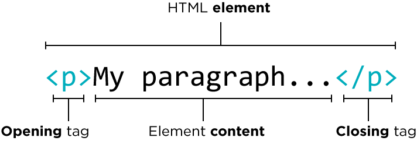

Bouw nu zelf de quizz!
We maken de quizz met de bouwstenen van het web.
Elke webpagina komt voort uit een combinatie HTML, CSS en Javascript.

Genoeg theorie, aan de slag!
Het ontwikkelen van de pagina doen we in een bepaalde omgeving, wij werken in VS Code wanneer we bezig zijn met coderen.
Het project zelf bouwen we niet van scratch, je krijgt een startstructuur.
Download hieronder VS Code en startmap.
Nadat je VS Code en de startmap hebt gedownload:
- Open je Visual Studio Code op je computer.
- Klik je op de "File" tab in de linkerbovenhoek van jouw scherm.
- Kies dan de optie "Open Folder" uit het dropdownmenu dat verschijnt.
- Pak de gedownloade zip-folder uit en open de resulterende map.
Als alles goed is, krijg je nu volgende structuur te zien:
We installeren nog vlug een extensie die ons het levens als ontwikkelaar een stuk makkelijk maakt, de "Live Server"-extension
Geef in de zoekbalk de naam "Live Server" in en, klik op de optie die helemaal bovenaan verschijnt.
Klik nu op install , dan wordt de LiveServer extensie geïnstalleerd.
We proberen de Live Server extensie even uit.
Ga naar je "index.html"-bestand (dat op dit moment nog volledig leeg is).
Rechtermuisknop en kies dan de optie "Open with Live server"
Een lege webpagina opent...
Dit is normaal! We hebben nog geen inhoud voor de pagina gemaakt.
Wel hebben we alles voorbereid om soepel te ontwikkelen.
Een korte recap van wat we tot nu toe gedaan hebben
- We hebben de ontwikkelingsomgeving(VS Code) gedownload en geopend.
- We hebben de startfolder geopend in de ontwikkelingsomgeving.
- We hebben een extensie geïnstalleerd(Live Server) die elke wijziging onmiddellijk visueel toont
Inhoud maken voor de quizz-pagina met HTML

Met HTML geven we de pagina inhoud.
Daarbovenop krijgt de inhoud ook een bepaalde betekenis.
2 vliegen in één klap dus.
HTML-tags definiëren inhoud maar geven tegelijkertijd ook betekenis aan de inhoud die ze definiëren.
Het geheel van de HTML-tags en de inhoud zelf noemt men het HTML-element.
Overloop de onderstaande tabel om een idee te krijgen van enkele veelgebruikte tags
| Tag | Beschrijft |
|---|---|
| <h1> | De belangrijkste titel op de pagina (waarover gaat je pagina als je dit in één zin of woord moet beschrijven) |
| <p> | Een gewone paragraaf ( denk aan een paragraaf in een boek) |
| <nav> | Een verzameling van links (denk aan een menu bovenaan de pagina) |
| <ul> | Een niet-geordende lijst (denk aan een boodschappenlijst) |
| <ol> | Een geordende lijst (denk aan een stappenplan, eerst dit, dan dat) |
| <li> | Een lijst item ( denk aan een item op een boodschappenlijst) |
| <a> | Een hyperlink (als je hierop klikt zal er iets openen) |
Denk na wat er zal gebeuren wanneer je HTML-code zal toevoegen aan de momenteel nog blanco pagina.
Heb je nagedacht? Plak dan nu de onderstaande HTML-code in je "index.html"-bestand.
Eenmaal je de code in het HTML document hebt geplakt, zie je inhoud verschijnen. Naast inhoud is er ook een visuele hiërarchie, de "START QUIZZING" tekst lijkt groot en belangrijk.
De HTML-code zorgt er dus voor dat de pagina inhoud krijgt, maar ook dat de inhoud betekenisvol is.
Oke, inhoud maken doen we dus met HTML... ik hoor je al denken: "Die witte achtergrondskleur vind ik maar niets".
We maken de pagina mooi met CSS!
In dit gedeelte verkennen we CSS, hetgene dat je pagina mooi zal maken!
Lees de onderstaande voorbeelden van wat CSS voor ons kan betekenen.
- De kleur van de tekst wijzijgen? CSS.
- Een mooie achtergrondskleur zien terwijl je aan het quizzen bent?->CSS.
- Een rode rode kleur wanneer je het foute antwoord geeft?->CSS.
Oke nu heb je een beeld van wat CSS voor ons kan doen.
Maar hoe ga je nu CSS gaan schrijven?
Stel je wil hoofdtitel (zit in een <h1>-tag) in een witte kleur zetten i.p.v de standaard zwarte kleur.
CSS heeft altijd drie zaken nodig om jou te verstaan:
- Het stukje inhoud dat je wil opmaken, de hoofdtitel dus-> dat stukje inhoud zit in de <h1>-tag.
- Welke eigenschap je van dat stukje inhoud wil wijzigen->De color-eigenschap
- Hetgene wat jij wil geven als waarde van die eigenschap ->Wit
De vertaling naar CSS is dan:
Oke als je dat begrijpt, dan kan je de code hieronder kopiëren naar je "style.css"-bestand
Zie je een verschil?
De quizz-pagina ziet er plots veel mooier uit, naast een inhoud(HTML) is er nu ook een opmaak(CSS) voor die inhoud.
Oke, maar waarom verschijnt mijn eerste vraag nog niet?
Javascript voor de interactiviteit!
Javascript is een programmeertaal dat gebruikt wordt om webpaginas interactief te maken.
Simpel gezegd wordt jouw muisklik vertaald naar het starten van de quizz!

Druk eens op "Start Quizz" en leg nu zelf uit wat er wel/niet gebeurt.
Helemaal niets! De vertaling van jouw klik is nog niet aanwezig. Zonder javascript zal je zelfs niet kunnen beginnen aan de eerste vraag.
Het belangrijkste dat je moet onthouden is dat we de inhoud(HTML) maar ook opmaak(CSS) van de pagina zullen wijzigen op basis van jouw interactie.
Oke, klikken en er gebeurt iets, maar je wil vast nog wat dieper nadenken? Lees dan verder!
Hoe komt het nu eigenlijk dat de quizz stopt als alle vragen op zijn? Dit heeft te maken met logica. Je moet eigenlijk in js-code een antwoord kunnen bieden op de volgende vraag:
Wanneer wil je een volgende vraag aanroepen en wanneer wil je dat ik de quizz stop?
Formuleer in woorden een zin waardoor je op elk moment kan antwoorden op volgende vraag: "Moet ik een volgende quizzvraag aanroepen of moet ik de quizz beïndigen?"
- Als(if) het nummer van de huidige vraag ( currentQuestion)
- kleiner(<) is dan het totaal aantal vragen (quizzLength)
- Dan ga je door met quizzen (nextQuestion roept de volgende vraag)
- Zoniet(else) beïndig je de quizz(finishQuiz sluit de quizz af en toont enkele opties.)
Omgezet naar code is dit:
if(currentQuestion < quizzLength) {
nextQuestion();
} else {
finishQuiz();
}
Oke als je dit verstaat kan je de onderstaande javascript toevoegen in je "script.js"-bestand en nu zelf kijken of de pagina inderdaad interactief is geworden
Probeer nu eens de quizz te starten, lukt dat?
Ja het lukt, de js-code die we hebben ingevoegd maakt dat de pagina interactief wordt.
Recap, alles samen nu!
Dus wat hebben we allemaal gedaan?
- We hebben HTML geschreven en gezien dat de quizz-pagina inhoud kreeg, daarbovenop werd de inhoud betekenisvol door de tags die rond de inhoud staan.
Denk aan titel(<h1>-tag) vs subtitel(<h2;>-tag) vs gewone tekst(<p>-tag) - We hebben daarna CSS gebruikt en we merkten dat de pagina er veel mooier uitzag.
Denk aan hoe de kleur van de achtergrond veranderde. - Uiteindelijk hebben we javascript ingevoegd en konden we een volledige quizz maken!
Actief leren is een van de beste methoden om materie te verwerken.
je kan de kennis die je hebt verworven nu zelf aftoetsen met je quizz!